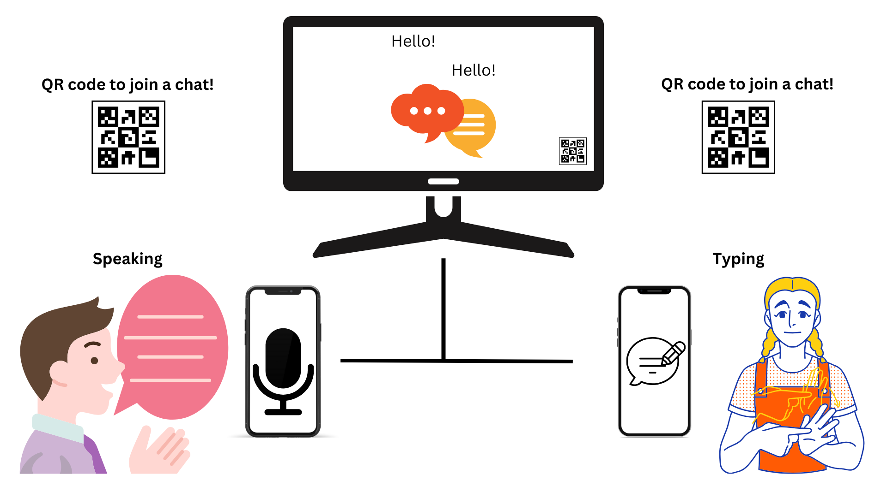
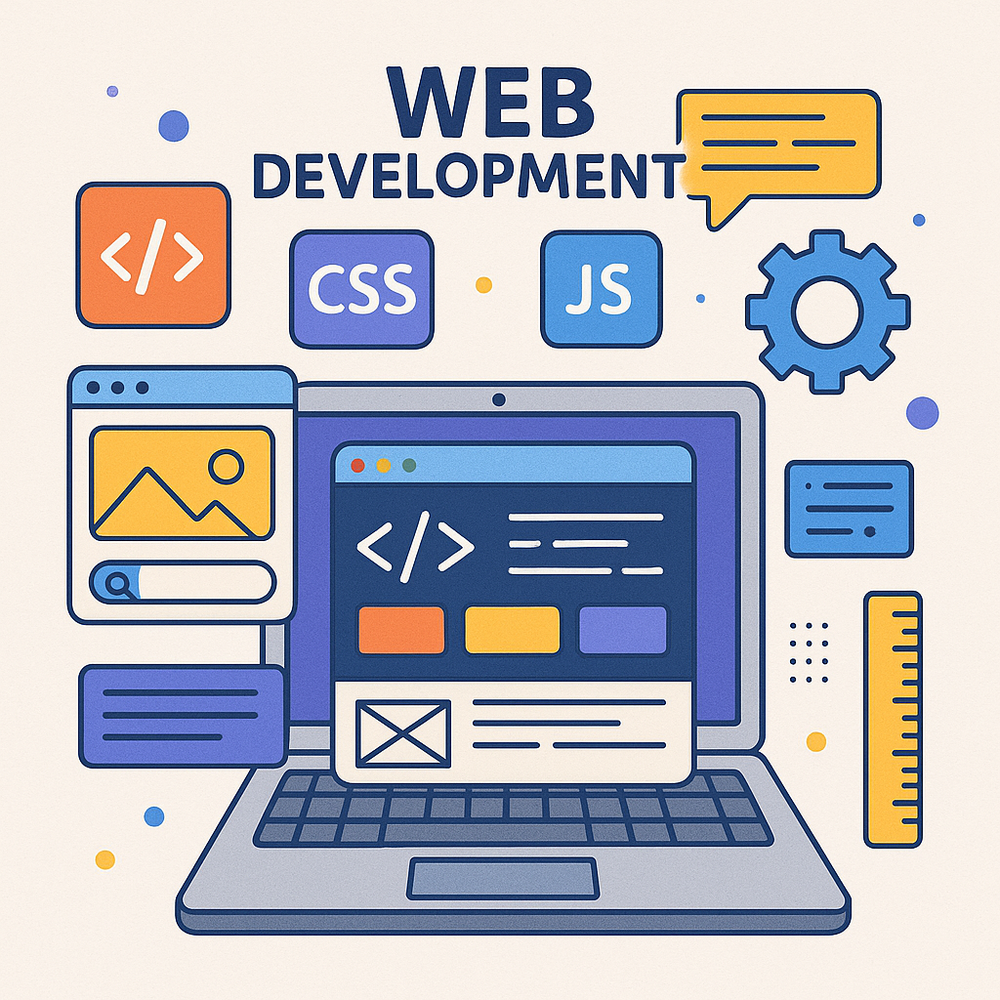

About Yugo
As a passionate Human-Computer Interaction (HCI) researcher with an M.S. in HCI from the Rochester Institute of Technology (RIT), I specialize in bridging accessibility and innovation through inclusive technology. My work focuses on user-centered design, usability testing, and emerging tools like generative AI to improve digital equity. My recent capstone project explores bridging communication gaps between hearing and Deaf/Hard-of-Hearing (d/DHH) communities through multimodal speech and typing recognition — combining technical problem-solving with social impact. This work is under review in CHI 2026. View Yugo’s Capstone report
With a diverse professional background across research, communications and marketing, web design, community engagement, and customer service roles, I bring technical skills and research expertise, such as user studies, focus groups, accessibility design, and critical analysis. Global Perspective: Multilingual proficiency in English and Japanese, combined with international experience in education and customer service.
I am currently seeking new opportunities in the following areas:
- Research opportunities in HCI, accessibility, Human-Centered AI and AI and learning including PhD positions starting soon
- Web development roles leveraging front-end and back-end skills or Application Developers
- Marketing, Communications, graphic design roles
- Consulting on accessibility audits and inclusive design strategies
I thrive at the intersection of technology, inclusivity, and human experience, driving projects that make a tangible impact on diverse communities. Let’s connect if you share a passion for accessible and human-centered technologies.
On Going Projects
A11y: Improving Alternative Texts for Science Figures With Generative AI
This is the AWARE-AI NSF research, and I lead this project. My team is designing studies investigating the effectiveness of utilizing the generative AI to generate better alternative texts for science articles.

Bridge Communications: Kiosk Multimodal Communications Tool for d/Deaf and Hard of Hearing and Hearing
The capstone project, where I designed Kiosk Multimodal Communcation Tool to investigate the usability and accessibility multimodal inputs (speaking and typing) for d/DHH and hearing individuals. Thsi work has submitted to CHI 2026.
Major Classes I have completed
- ISTE646– Foundation of Web Technology Development II: Studying about the web back end mainly
- HCIN795– MS-HCI Capstone Project: Working on my View Yugo's Capstone Proposal.
- ISTE645– Foundation of Web Technology Development I: Learned about the front-end web technologies, including wireframes and basic front-end including HTML, CSS, and JavaScript in Fall 2024.
- HCIN610– Foundation of Human-Computer Interaction: Learned theories of HCI in Spring 2022
- HCIN630– Usability Testing: Learned about usability testing and how to report in Spring 2024
- HCIN620– Information and Interaction Design: Learned about managing information and converting collected data to an improved design in Spring 2024. Group Project website is here
- HCIN720– Prototyping Wearable & IoT Devices: Learned about wearable and IoT devices prototypes mainly using Adrino and C++ in fall 2023. Final Group Project is here
- REL430– Tourism Marketing: Learned about the marketing strategies forthe tourism industry in Spring 2020.
Completed Projects & Publications
RIT HCI Research Website
I revamped and updated the design and contents of HCI research page for the School of Information (the iSchool) while I was a Coordinator of Communications and Student Expeirence.

The iSchool Tour
This video was published for perspective students and families to have an idea about the iSchool while they participated in the virtual open house during pandemic. I used Premiure Pro to edit the recordings.
INSPIRE
INSPIRE aims to support faculty with disability in research and teaching at RIT. I designed and built a website using HTML and the design tool RIT offers, along with the branding guidelines. You can learn about the experience as faculty with disability or teaching students with disability at Experience Page of INSPIRE

Generative AI in K-12
Currently building the workshop and poster plans for K-12 teachers, specifically underfunded schools to have free resources, plus generative AI to improve the educational opportunities for students.

The iSchool Graduation Video
This video was published to celebrate class of 2022. Recorded half of the clips prior to the commencement and students are shared thier story on the day walking the stage. Many international families who could not be in person watched this video as well.
The iSchool Recruitment Page
This web project aimed to recruit faculty, including the director of the department at the time. Information was collected from current faculty and staff, and then I designed a single page following the RIT branding guideline.

Caption Mask Promotion video from ImagineRIT
This was recorded during ImagineRIT featuring the student project in the iSchool. Using a microphone to record and then Premiere Pro to edit. They were invited to some local hospitals for a presentation and made an amazing contribution to the world.
Text-To-Speech Instruction for Disability Services
The goal of this project was reducing the number of human readers needs to save resources for others as testing accommodation needs were increasing dramatically. Text-to-speech with natural reader became the common resource for students in Disability Services Office (DSO)

Being Included: Institute Benefits in Supporting Inclusivity For Disabled Faculty in Higher Education
ICERI2024 Proceeding, pp. 5648-5654 publications with Dr. Elissa Weeden, Catherine Beaton, and April Roberts
Usage of generative AI among MLL students
This is part of the research with Prof. Beaton and supporting a focus group dat collection for multi lingual language larners using generative AI in both academia and personal life including language translation.

ISTE-646 Class Project & Homeworks
ISTE-646 is web technology and foundation II course where I learn JavaScript, PHP, React and SQL on top of HTML, CSS and basic JavaScript. You can visit the website for ISTE 646 where I showcase all assignments and projects, both individual and group, from the class.
Personal (Portfolio) Website Developmemt
Developed and tutored some of the peronal websites in acadmia such as forDr. Narmala Shenoy and Professor Catherine Beaton at Rochester Institute of Technology in 2024-2025 academic year.
More Work or Collaborations with Yugo
I am happy to answer any questions about my work or inquiries about the collaborations. Please feel free to email me directly or fill out the form below.